คาเฟ่
คาเฟ่ริมน้ำ
เกาะเกร็ดไม่ได้มีแค่ของกินโบราณ ช่วงหลังมีคาเฟ่เปิดเพิ่มเรื่อย ๆ ริมน้ำ หน้านี้รวมไว้สิบร้าน พร้อมราคา เวลาเปิด และช่วงที่ควรไปของแต่ละร้าน
สรุปให้ก่อน
- ราคา
- 30–400 บาทถูกสุดคือกาแฟเย็นที่บ้านเลขที่ ๑ แพงสุดคือร้านที่กินมื้อหลักได้
- เวลาเปิด
- ส่วนใหญ่เสาร์–อาทิตย์วันธรรมดาเปิด 3 ร้านจาก 10 ร้าน อีกร้านหนึ่งยังไม่มีข้อมูลเวลา
- พิกัด
- ต.เกาะเกร็ด อ.ปากเกร็ด นนทบุรีกระจายอยู่ตามแนวริมน้ำและริมคลอง
- รวมในหน้านี้
- 10 ร้านมีทั้งคาเฟ่ล้วน บาร์ที่มีดนตรีสด คาเฟ่ในโฮมสเตย์ และร้านที่กินมื้อหลักได้
จุดขายของคาเฟ่บนเกาะไม่ได้อยู่ที่กาแฟอย่างเดียว แต่อยู่ที่การได้นั่งมองแม่น้ำโดยไม่มีถนนคั่น ซึ่งเป็นสิ่งที่หาไม่ได้ในเมือง หน้านี้รวมไว้สิบร้าน พร้อมราคา เวลาเปิด และช่วงที่ควรไปของแต่ละร้าน
สิบร้านในหน้านี้
- กาแฟบ้านเลขที่ ๑
- NAMWON CAFE
- โจนมุมตึก คาเฟ่
- WAYDE เวทย์ (บ้านดำ)
- Baan Matard บ้านมะตาด
- Pongmas Café ปองมาศ
- ร้านมีรักษ์
- ยกเย็นขึ้นบก
- BAANYA HOMESTAY คาเฟ่บ้านย่า
- ณ โรงสี คาเฟ่ (Rongsi Studio)
และมีอีกหนึ่งร้านที่ อยู่นอกเกาะ เก็บไว้ท้ายหน้า
เลือกร้านยังไง
- ส่วนใหญ่เปิดเฉพาะเสาร์–อาทิตย์ ถ้าไปวันธรรมดาเหลือโจนมุมตึกกับ ณ โรงสี ที่เปิดทุกวัน และยกเย็นขึ้นบกที่เปิดพุธ–ศุกร์
- อยากได้วิวแม่น้ำเต็ม ๆ ไป NAMWON หรือ WAYDE ส่วนอยากได้มุมนั่งห้อยขาริมคลองต้องกาแฟบ้านเลขที่ ๑
- ไปกันหลายคนแล้วงบไม่เท่ากัน ดูช่วงราคาของแต่ละร้านก่อน มีตั้งแต่กาแฟแก้วละ 30 บาทจนถึงมื้อหลักหลักสี่ร้อย
- อยากอยู่ถึงค่ำมี ณ โรงสี ที่เปิดถึงสี่ทุ่ม ส่วน BAANYA ยังไม่มีข้อมูลเวลาเปิด-ปิด ต้องโทรถามก่อน
1. กาแฟบ้านเลขที่ ๑
ร้านกาแฟเล็ก ๆ บรรยากาศเรียบง่ายและร่มรื่น จุดเด่นคือมุมนั่งห้อยขาริมคลอง ให้ความรู้สึกสบาย ๆ เหมือนมานั่งพักที่บ้าน มีทั้งกาแฟสด กาแฟโบราณ เครื่องดื่ม และอาหารคาวอย่างสเต๊กกับพิซซ่า
- ราคา
- ต่ำกว่า 100 บาทกาแฟเย็นเริ่มต้นราว 30 บาท
- เวลาเปิด
- เสาร์–อาทิตย์ 10:00–17:00เปิดวันหยุดนักขัตฤกษ์ด้วย
- พิกัด
- 1 หมู่ 1 ต.เกาะเกร็ด อ.ปากเกร็ด นนทบุรี 11120ข้ามเรือจากท่าวัดสนามเหนือมาลงท่าวัดปรมัยยิกาวาส เลี้ยวซ้ายราว 150 เมตร ข้ามสะพานเล็ก ร้านอยู่ขวามือ
- ควรไปตอนไหน
- สายถึงบ่าย 10:00–15:00ช่วงที่นั่งห้อยขาริมคลองร่มที่สุด
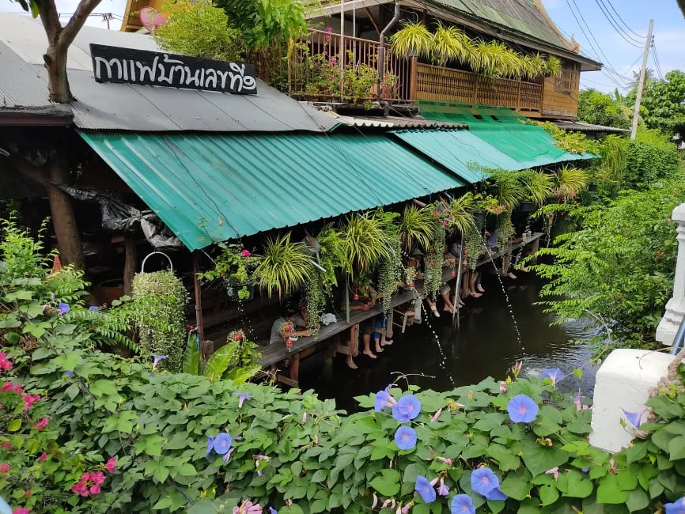
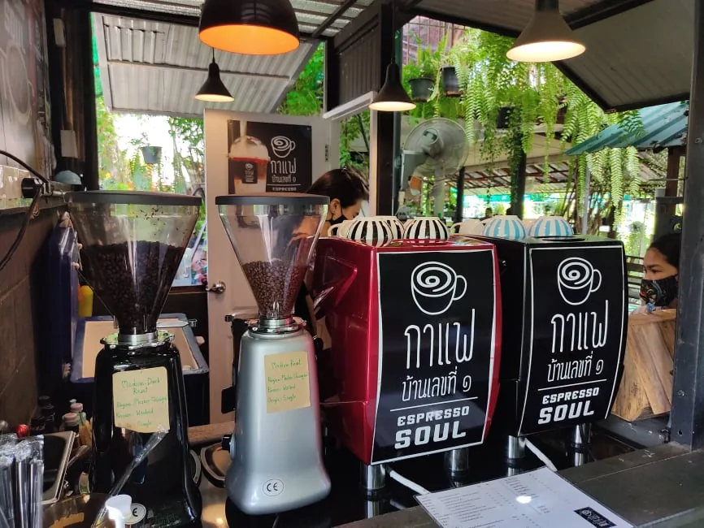
2. NAMWON CAFE
คาเฟ่ริมแม่น้ำเจ้าพระยาที่ได้วิวโค้งน้ำกว้าง เหมาะกับการมานั่งชิลรับลมเย็น ๆ
- ราคา
- 100–200 บาท
- เวลาเปิด
- เสาร์–อาทิตย์ 10:00–19:00ปิดจันทร์–ศุกร์
- พิกัด
- 15/1 ต.เกาะเกร็ด อ.ปากเกร็ด นนทบุรี
- ควรไปตอนไหน
- บ่ายแก่ถึงเย็น 16:00–18:00ช่วงพระอาทิตย์ตกริมแม่น้ำ
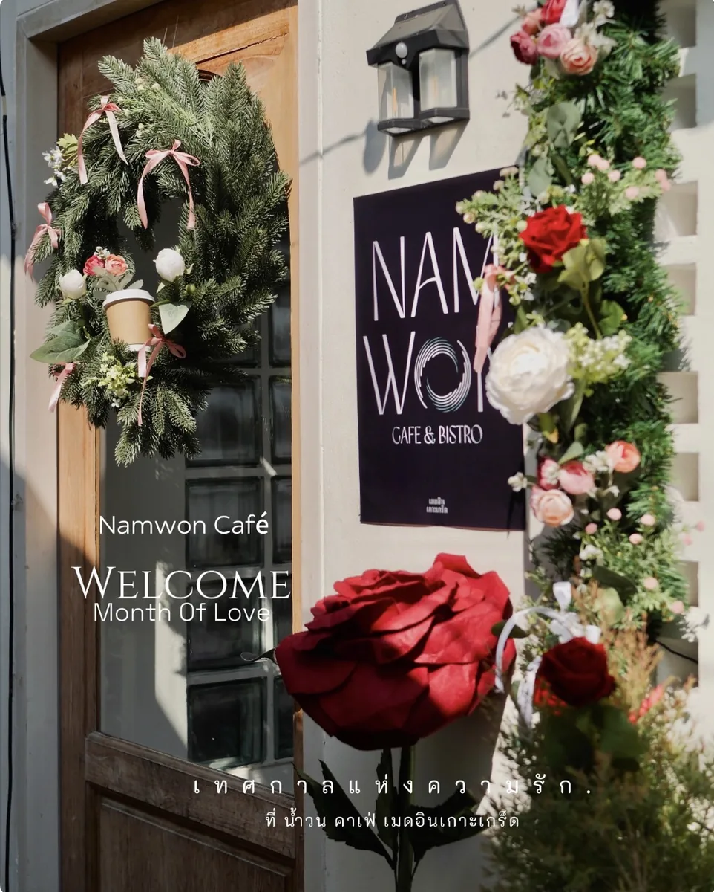
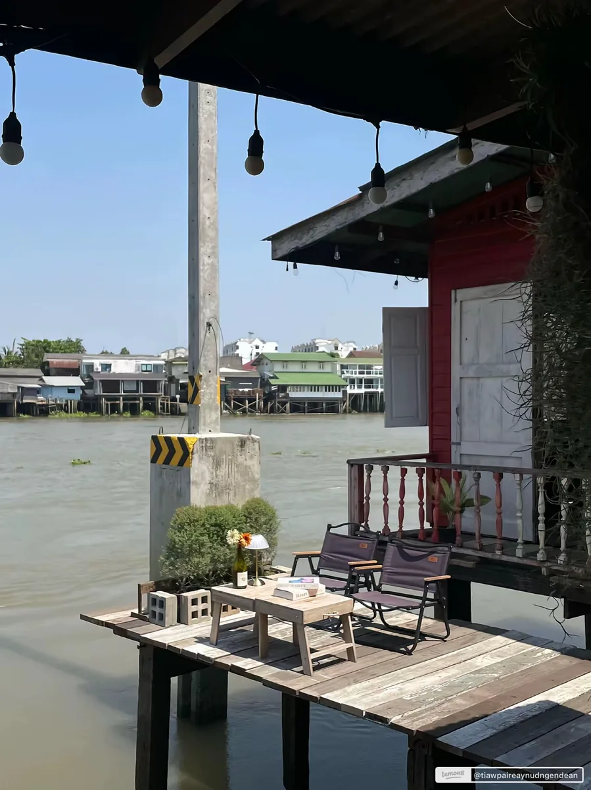
3. โจนมุมตึก คาเฟ่
ตกแต่งสไตล์วินเทจ มีของสะสมเก่าแก่ให้ดูเพลิน ๆ พร้อมที่นั่งริมน้ำบรรยากาศสบาย ๆ
- ราคา
- 100–200 บาท
- เวลาเปิด
- ทุกวัน 09:40–20:40ร้านเดียวในหน้านี้ที่เปิดทุกวัน
- พิกัด
- ต.เกาะเกร็ด อ.ปากเกร็ด นนทบุรี
- ควรไปตอนไหน
- บ่ายเป็นต้นไปจนถึงค่ำแสงสวยสำหรับถ่ายรูปสไตล์วินเทจ
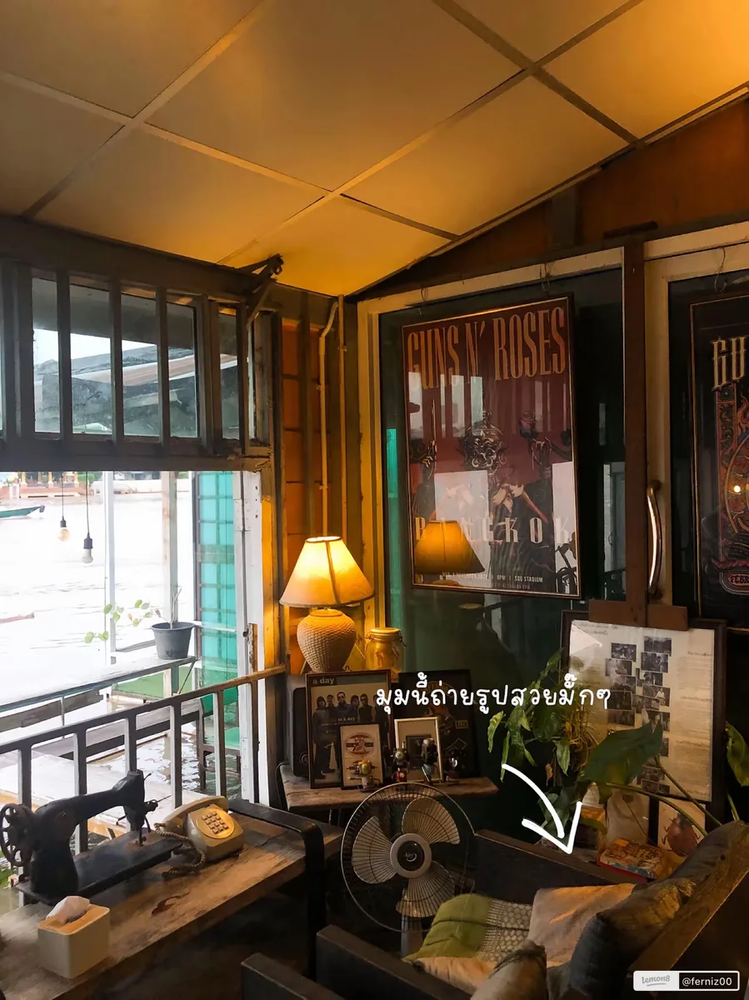
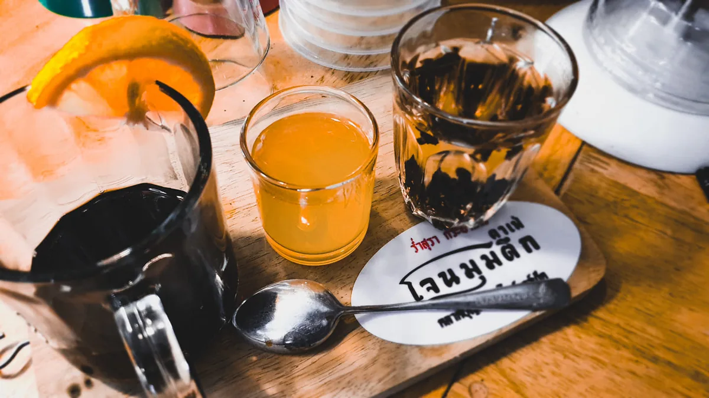
4. WAYDE เวทย์ (บ้านดำ)
เป็นทั้งบาร์และคาเฟ่ในบ้านไม้สไตล์ล้านนาสุดคลาสสิก โดดเด่นเรื่องคราฟต์เบียร์และมีดนตรีสด
- ราคา
- 150–300 บาทขึ้นไป
- เวลาเปิด
- เสาร์–อาทิตย์ 10:00–22:00ปิดจันทร์–ศุกร์
- พิกัด
- ต.เกาะเกร็ด อ.ปากเกร็ด นนทบุรี
- ควรไปตอนไหน
- เย็นถึงค่ำ 17:00 เป็นต้นไปช่วงดนตรีสดและวิวโค้งน้ำยามค่ำ
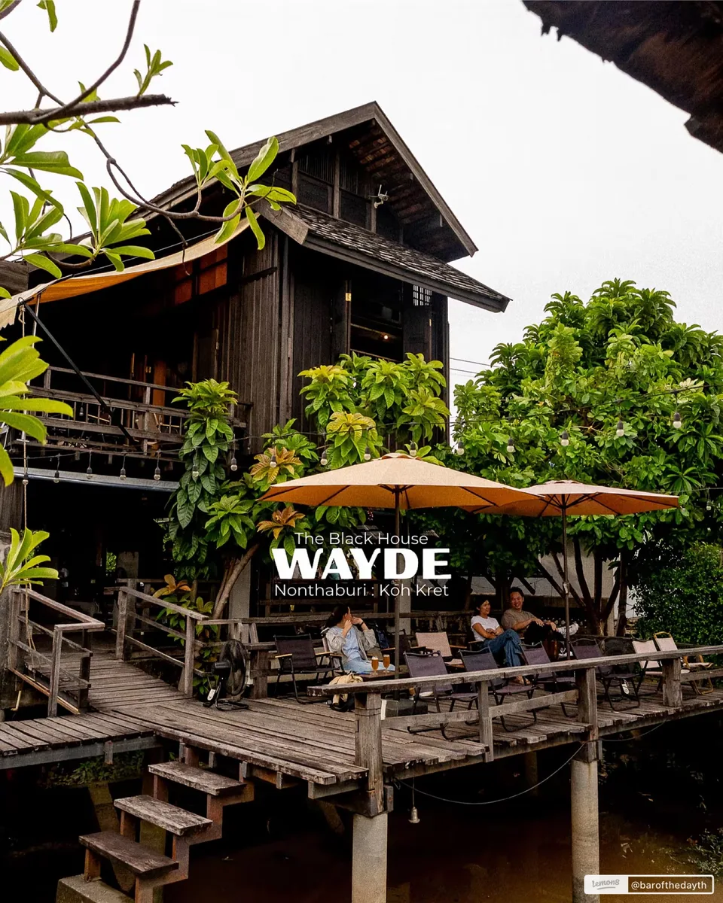
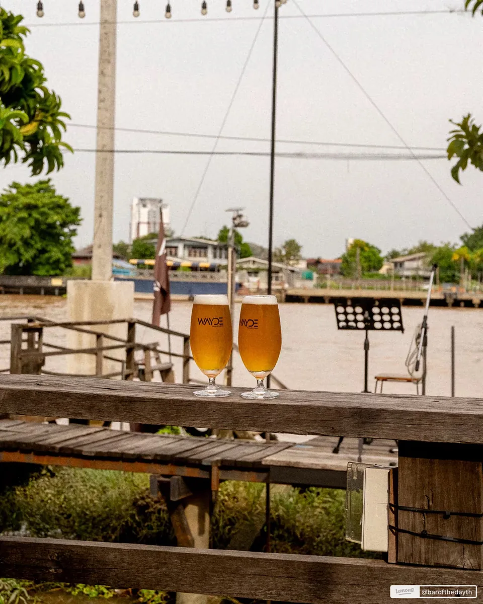
5. Baan Matard บ้านมะตาด
ให้ความรู้สึกโฮมมี่และร่มรื่นไปด้วยต้นไม้ใหญ่ มีมุมห้องแอร์เย็นสบาย และพาสัตว์เลี้ยงเข้ามาได้
- ราคา
- 100–200 บาทเบเกอรี่และเครื่องดื่ม
- เวลาเปิด
- เสาร์–อาทิตย์ 09:00–17:00ปิดจันทร์–ศุกร์
- พิกัด
- ต.เกาะเกร็ด อ.ปากเกร็ด นนทบุรี
- ควรไปตอนไหน
- สายถึงบ่ายเหมาะกับการหลบร้อนระหว่างเดิน
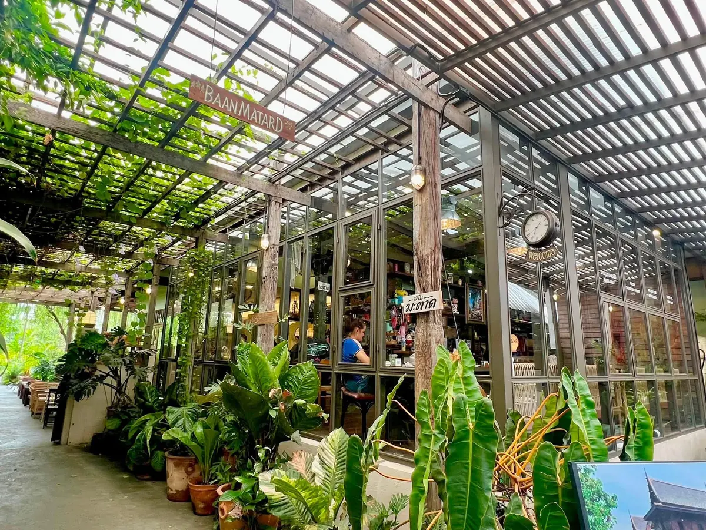
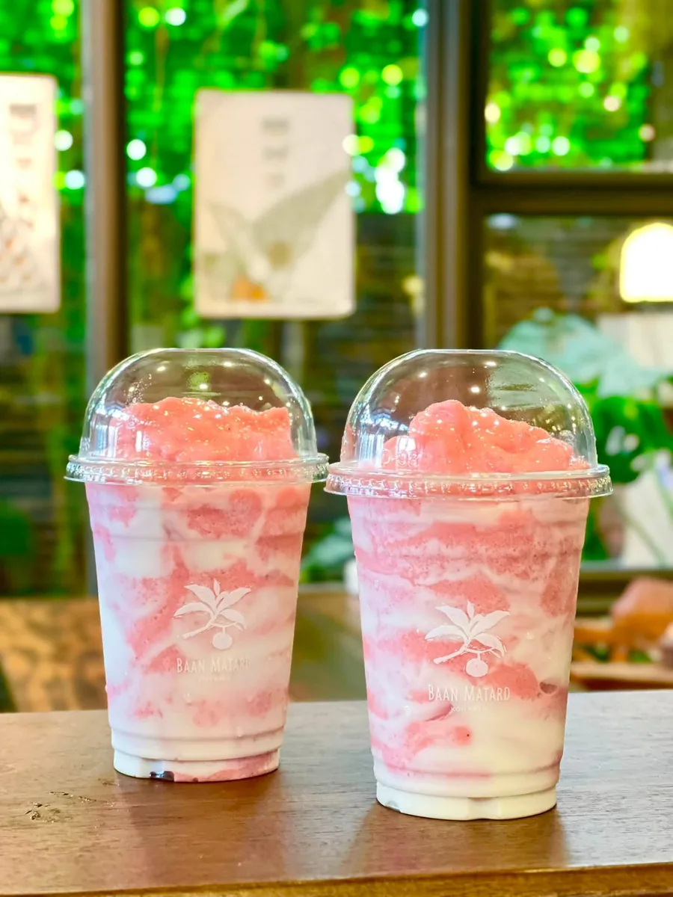
6. Pongmas Café ปองมาศ
ร้านกาแฟเล็ก ๆ น่ารักที่ให้บรรยากาศเป็นกันเอง เหมาะแก่การแวะพักเติมพลัง
- ราคา
- 80–150 บาทถูกที่สุดในกลุ่มร้านที่รวมไว้
- เวลาเปิด
- เสาร์–อาทิตย์ 10:00–18:00ปิดจันทร์–ศุกร์
- พิกัด
- ต.เกาะเกร็ด อ.ปากเกร็ด นนทบุรี
- ควรไปตอนไหน
- สายถึงบ่ายแวะพักทานขนมและเครื่องดื่มคลายร้อน
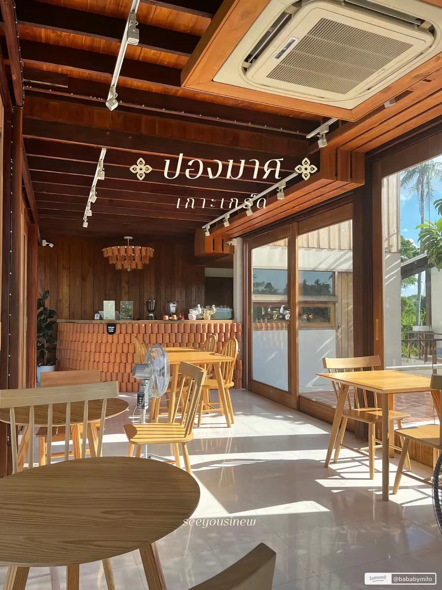
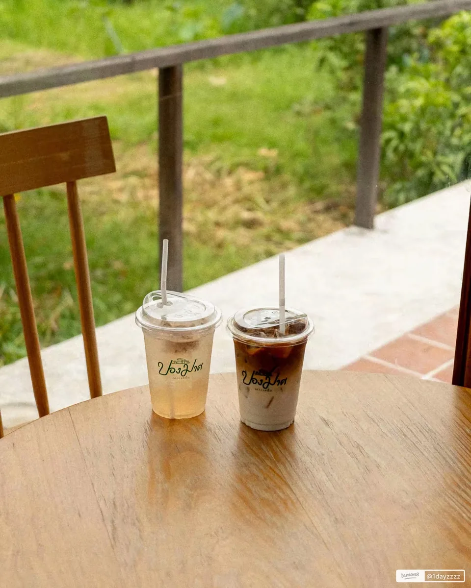
7. ร้านมีรักษ์
โดดเด่นด้วยบรรยากาศเงียบสงบ เป็นอีกหนึ่งจุดแวะพักที่คนรักความชิลไม่ควรพลาด
- ราคา
- 100–200 บาท
- เวลาเปิด
- เสาร์–อาทิตย์ 09:30–19:00ปิดจันทร์–ศุกร์
- พิกัด
- 15/3 ต.เกาะเกร็ด อ.ปากเกร็ด นนทบุรี
- ควรไปตอนไหน
- สายถึงบ่ายแก่เหมาะกับการนั่งพูดคุยสบาย ๆ ในวันหยุด
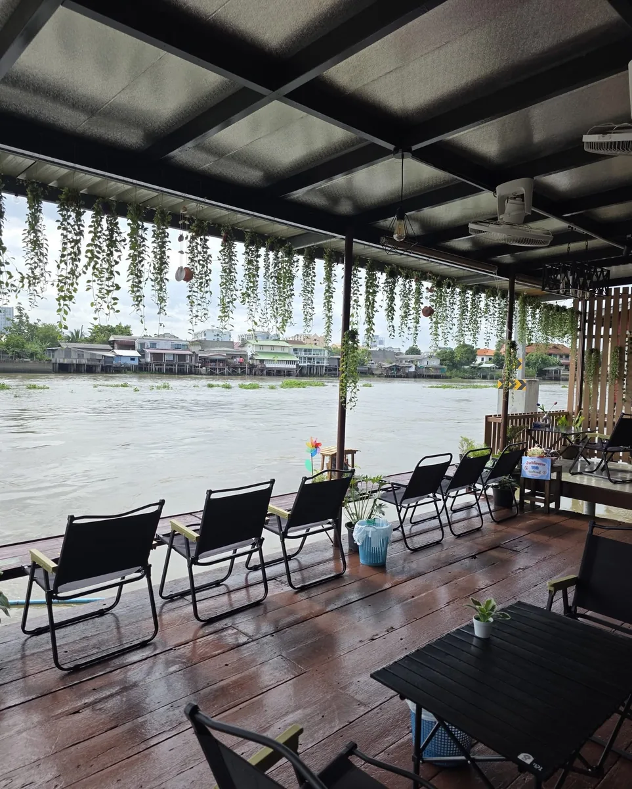
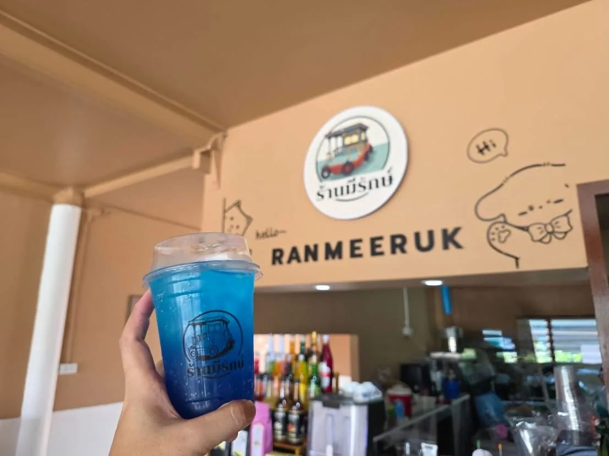
8. ยกเย็นขึ้นบก
เป็นทั้งคาเฟ่และร้านอาหารในบ้านไม้เก่าริมน้ำ เมนูที่คนนิยมสั่งคือผัดจันท์หมึกไข่และข้าวผัดมันกุ้ง
- ราคา
- 150–300 บาทขึ้นไปมีอาหารจานหลักด้วย
- เวลาเปิด
- พุธ–ศุกร์ 11:30–18:00 · เสาร์–อาทิตย์ 11:30–18:30ปิดจันทร์–อังคาร
- พิกัด
- 6 หมู่ 1 ต.เกาะเกร็ด อ.ปากเกร็ด นนทบุรี
- ควรไปตอนไหน
- เที่ยงหรือเย็นเที่ยงสำหรับมื้อหลัก เย็นสำหรับนั่งรับลมริมน้ำ
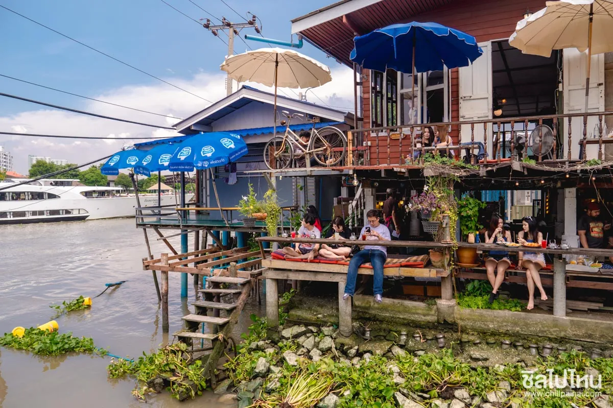
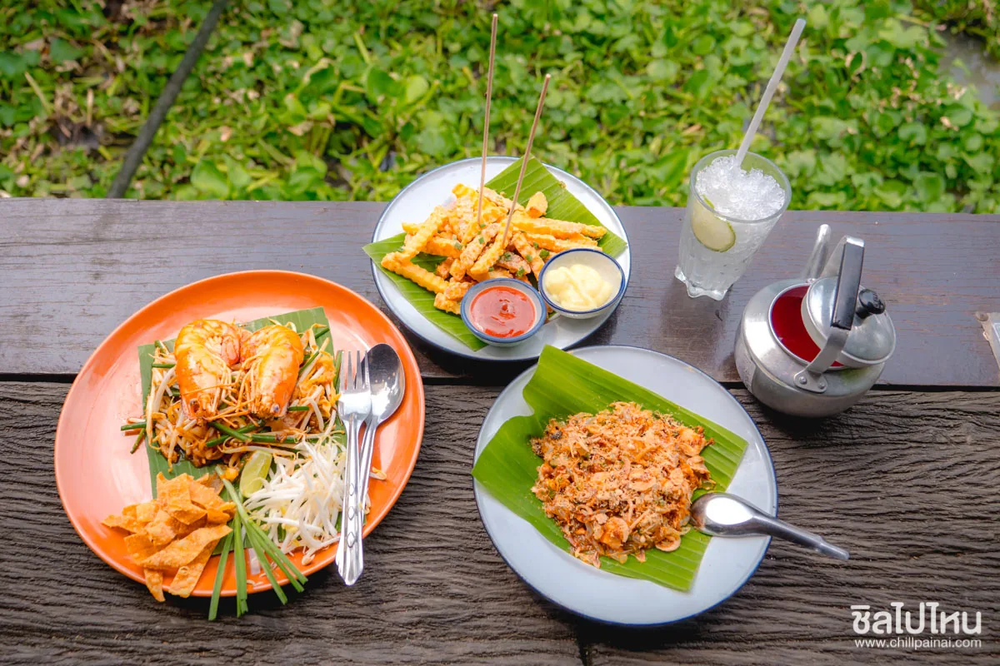
9. BAANYA HOMESTAY คาเฟ่บ้านย่า
คาเฟ่ในโฮมสเตย์บ้านไม้เก่าริมแม่น้ำเจ้าพระยา บรรยากาศโฮมมี่และเงียบ มีพื้นที่นั่งเล่นริมน้ำ ข้อมูลของที่พักระบุว่ามีบริการชา กาแฟ และอาหารเช้า
- ราคา
- ยังไม่พบราคาที่ยืนยันได้ควรสอบถามร้านโดยตรงก่อน
- เวลาเปิด
- ยังไม่พบเวลาที่ยืนยันได้ไม่มีข้อมูลเวลาของส่วนคาเฟ่ที่แยกจากโฮมสเตย์ โทร 065-424-9051 ถามก่อนได้
- พิกัด
- 28 หมู่ 2 ต.เกาะเกร็ด อ.ปากเกร็ด นนทบุรี 11120
- ควรไปตอนไหน
- เช้าถึงบ่ายช่วงเช้าอากาศริมน้ำสบายที่สุด
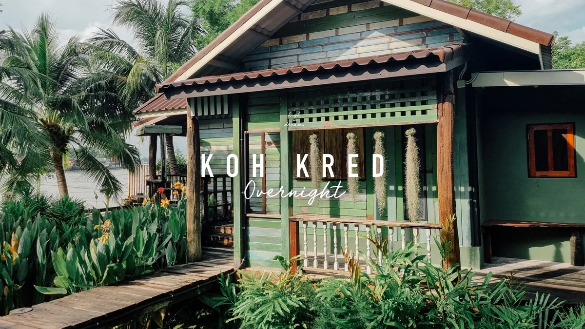
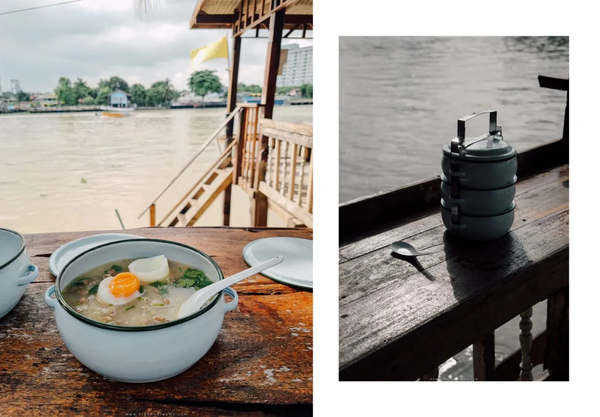
10. ณ โรงสี คาเฟ่ (Rongsi Studio)
คาเฟ่และร้านอาหารริมแม่น้ำเจ้าพระยาที่ดัดแปลงจากโรงสีข้าวเก่าอายุกว่าร้อยปี ยังคงโครงสร้างและบรรยากาศของโรงสีเดิมไว้ มีทั้งที่นั่งในอาคารและบริเวณริมน้ำ
- ราคา
- 200–400 บาทต่อคนเครื่องดื่มอย่างเดียวถูกกว่านี้ เอสเปรสโซลาเต้ราว 80 บาท
- เวลาเปิด
- ทุกวัน 10:00–22:00ร้านที่เปิดดึกที่สุดในหน้านี้
- พิกัด
- 3010 ถนนวัดสว่างอารมณ์ ต.เกาะเกร็ด อ.ปากเกร็ด นนทบุรี 11120จอดรถที่วัดปากคลองพระอุดมแล้วนั่งเรือข้ามฟากมาราว 2 นาที ค่าเรือราว 10–20 บาทต่อคน
- ควรไปตอนไหน
- บ่ายแก่ถึงเย็น 15:00–18:00ช่วงแสงสวยสำหรับถ่ายรูปริมแม่น้ำ อยากอยู่ถึงค่ำก็ได้เพราะเปิดถึงสี่ทุ่ม
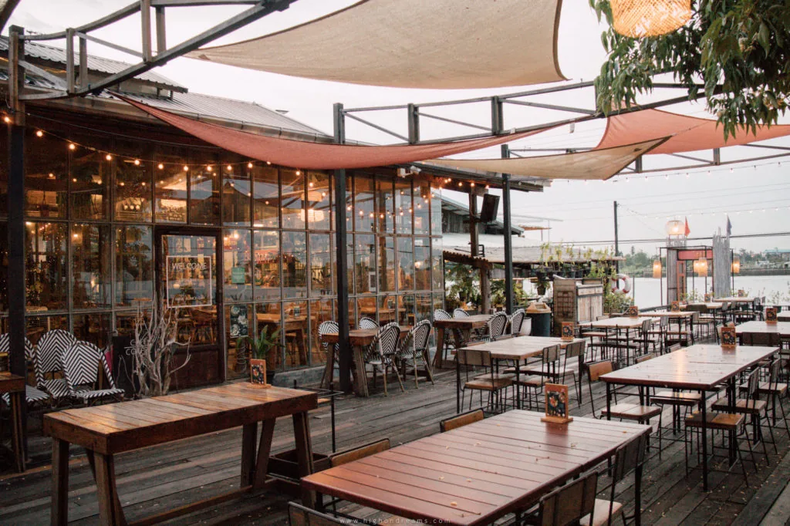
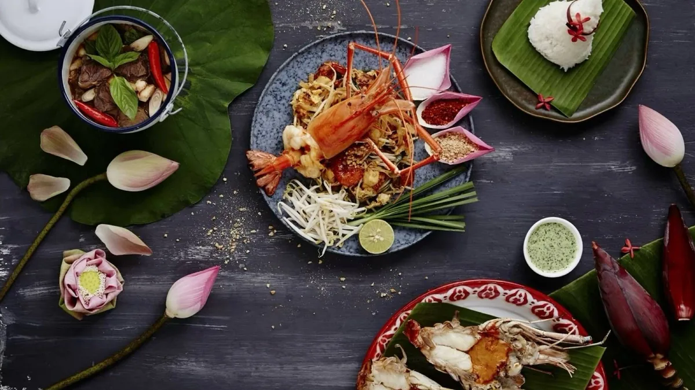
คาเฟ่นอกเกาะ
ร้านข้างล่างนี้ ไม่ได้อยู่บนเกาะเกร็ด แต่อยู่ในอำเภอเมืองนนทบุรี ต้องขับรถไปต่างหาก เดินจากท่าเรือไม่ถึง เก็บไว้เผื่อวันที่ข้ามเกาะไม่ทันหรืออยากแวะก่อนกลับ
Plieu Café (พริ้ว คาเฟ่)
คาเฟ่บรรยากาศอบอุ่น ตกแต่งมินิมอลผสมความเป็นแกลเลอรี มีทั้งโซนคาเฟ่และโซนอาหาร ในร้านมีงานศิลปะและของตกแต่งให้ดู มีกาแฟ ชา เบเกอรี่ ของหวาน และอาหารคาวให้เลือก
- ราคา
- 70–300 บาทต่อเมนูอเมริกาโนเย็นราว 75 บาท ลาเต้เย็นราว 85 บาท อาหารคาวสูงกว่านั้น
- เวลาเปิด
- ทุกวัน 08:30–20:30
- พิกัด
- 335/13 ถนนนนทบุรี ต.ท่าทราย อ.เมืองนนทบุรี นนทบุรี 11000อยู่ในโครงการ Plus Park Avenue สนามบินน้ำ ไม่ได้อยู่บนเกาะ ต้องขับรถไป · โทร 081-853-4055 หรือ 081-407-1245
- ควรไปตอนไหน
- สายถึงบ่าย 09:00–15:00ร้านมีแสงธรรมชาติและมุมตกแต่งหลายจุด
ควรแวะตอนไหนของวัน
ถ้าเดินวัดกับเจดีย์และหมู่บ้านมาแล้ว เก็บคาเฟ่ไว้ช่วงบ่ายแก่จะพอดีที่สุด ได้พักขาก่อนเดินกลับไปขึ้นเรือ และเป็นช่วงที่แสงบนแม่น้ำสวยที่สุดด้วย ส่วนใครอยากอยู่ยาวถึงค่ำมี WAYDE กับโจนมุมตึกที่เปิดถึงสามทุ่มกว่า
เช็กเวลาเรือก่อนสั่งแก้วที่สอง
เรือข้ามฟากมีเที่ยวสุดท้าย ถ้านั่งเพลินจนเลยเวลา จะต้องหาทางกลับที่ยุ่งกว่าเดิมมาก โดยเฉพาะร้านที่เปิดถึงค่ำ